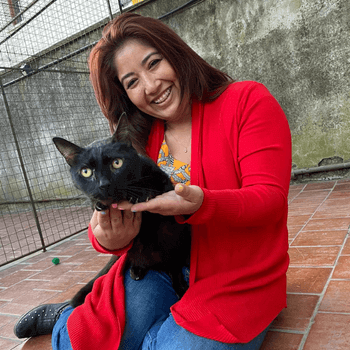
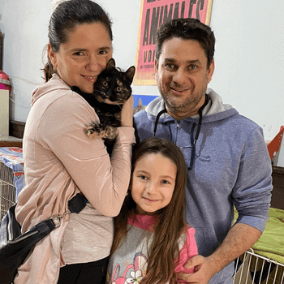
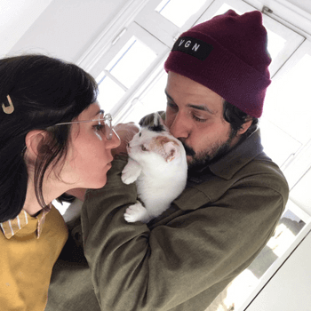
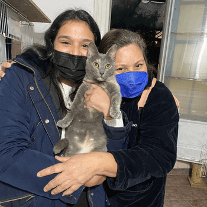

Trabajando día a día para poder hacer un mundo un poco más justo para los animales.
Gatitos de la Sarmiento
Creemos en el trabajo constante, comprometido y conciente. Construir una sociedad y un mundo más justo y equitativo es posible: todos podemos aportar un granito de arena, todos podemos ayudar.
DONACIÓN ECONÓMICA
Somos una ONG que no recibe donaciones ni subsidios del estado, ni de empresas. Todo lo que hacemos es gracias a recaudaciones de fondo que hacemos (bazar, colectas en redes sociales, rifas) y a tu donación.
DONACIÓN MATERIAL
Podés revisar la lista de materiales e insumos que necesitamos para los tratamientos, curaciones, alimentacion, desparasitación y limpieza de nuestros gatitos y también del refugio.
BAZAR A BENEFICIO
Con tu compra ayudas a nuestros refugio ya que el 100% de lo recaudado con las ventas es a beneficio. Contamos con una línea exclusiva de productos ilustrados con nuestros gatitos en adopción.

Whisky | 5 años

Lexy | 9 meses

Patagonia | 2 años

Love | 1 año